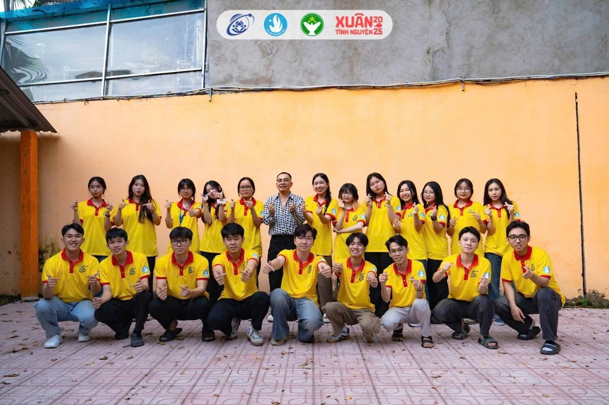
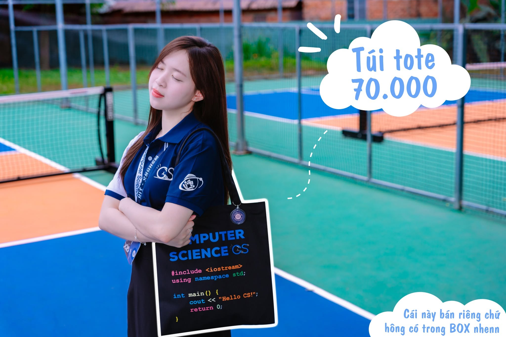
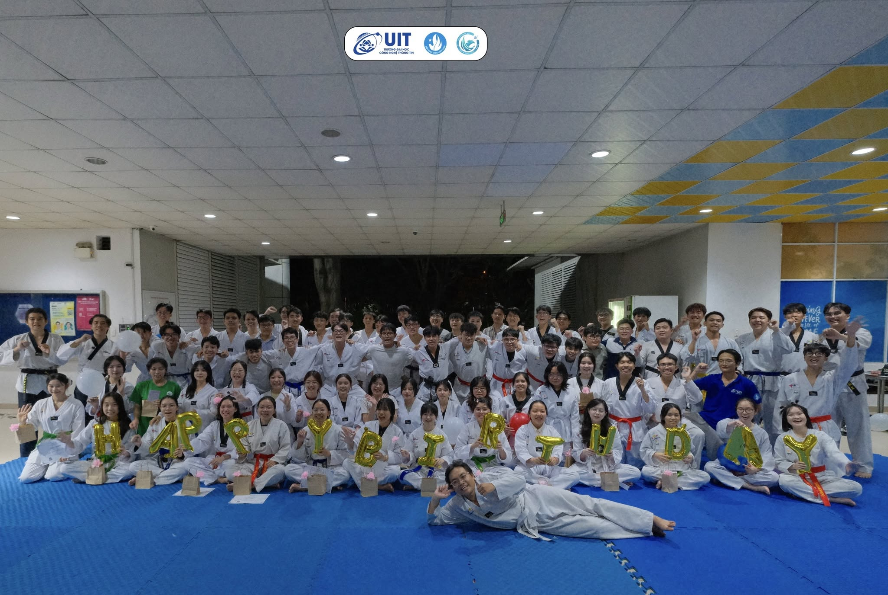
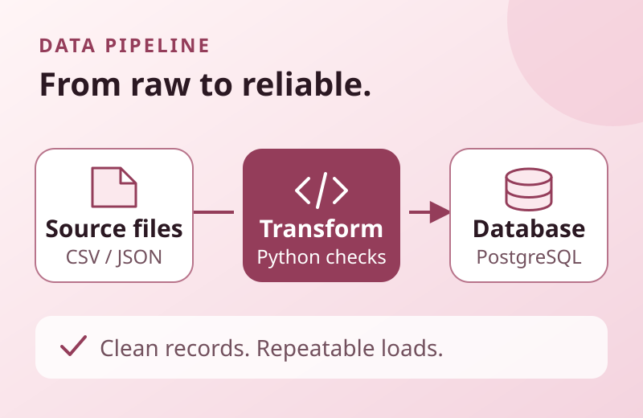
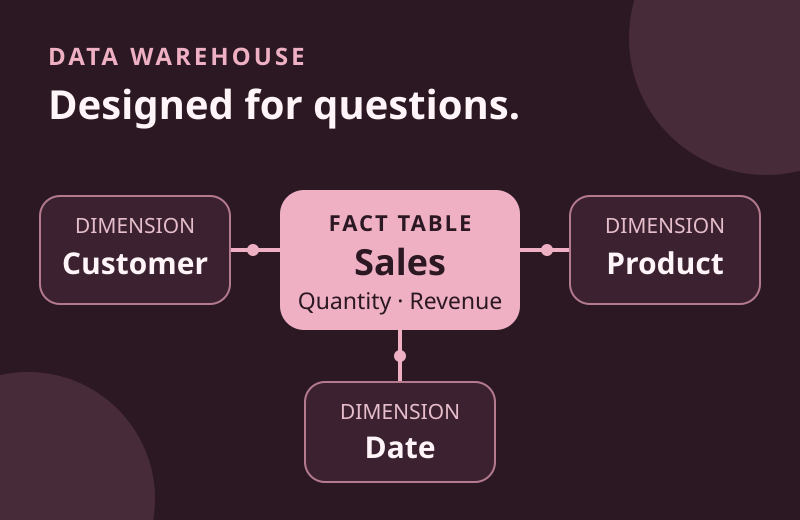
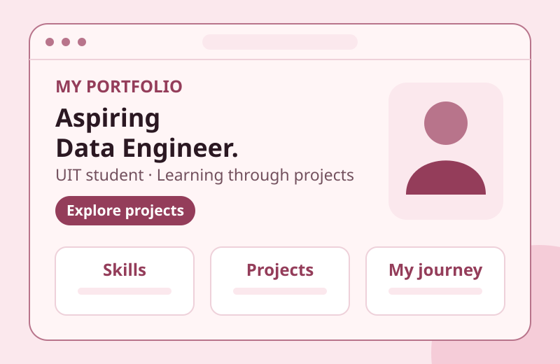

Python & SQL
Building programming and query skills to explore, clean, and organize data.
- Python fundamentals
- SQL queries
- Data cleaning
- CSV & JSON
Hello, welcome to my portfolio!
Third-Year UIT Student | Aspiring Data Engineer | Data Pipeline Enthusiast
I am a third-year student at the University of Information Technology (UIT), Vietnam National University Ho Chi Minh City. I am pursuing a career in Data Engineering, with an interest in turning raw data into reliable datasets for analytics and informed decision-making.
Explore My Projects Get In Touch

As a third-year student at UIT, VNU-HCM, I am developing a foundation in programming, databases, and data processing. I am especially interested in how Data Engineers collect, transform, and organize data from different sources into systems that people can trust.
My goal is to grow into a Data Engineer who builds reliable, maintainable data pipelines. I want to deepen my knowledge of Python, SQL, ETL/ELT workflows, data modeling, and data warehouses, with a focus on data quality and clear documentation. Through hands-on projects and collaboration, I hope to support real-world analytics and business needs.
A few moments from volunteering, student life, and shared activities beyond the classroom.



The foundations I am developing as a third-year UIT student working toward a career in Data Engineering.
Building programming and query skills to explore, clean, and organize data.
Learning how data moves from source systems to useful, reliable datasets.
Exploring how to structure and store data for consistent queries and analytics.
Practicing version control, clear documentation, and debugging through coursework and this portfolio.
My current portfolio and two planned learning projects for practicing data pipelines, data modeling, and SQL.

Planned learning project
A project I plan to build using sample sales CSV files: clean and validate records with Python, load them into PostgreSQL, and write SQL summaries. The focus will be handling missing values, duplicates, and repeatable loads.

Planned learning project
A planned modeling exercise using sample sales data. I want to design fact and dimension tables, query sales by product and time, and check that summary totals match the source data.

In progress
The website you are viewing, built with HTML, CSS, and Vanilla JavaScript to introduce my background and Data Engineering goals. I am practicing responsive design, accessible markup, and version control with Git.
I am always interested in learning, collaborating, and exploring new opportunities in technology.
Email: yourname@example.com
GitHub: Visit My GitHub
LinkedIn: Visit My LinkedIn